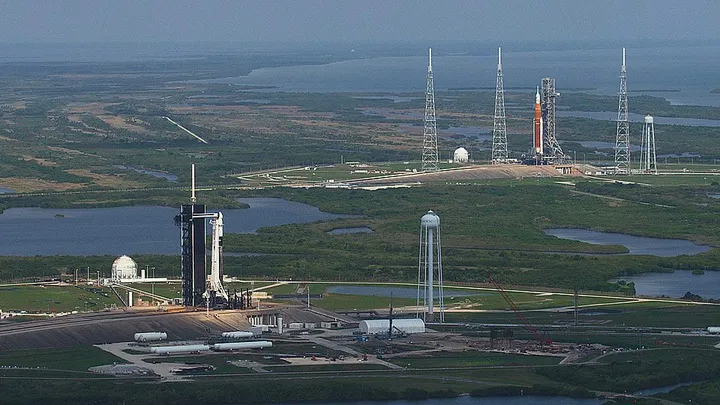

Existem nos EUA grandes complexos de lançamentos, como a Base da Força Espacial Vandenberg, na Califórnia, e a Kodiak Island, no Alasca. Entretanto, as principais missões espaciais — tanto robóticas quanto tripuladas, incluindo as missões Apollo e Artemis — são lançadas da costa leste da Flórida.
No litoral leste dos EUA, existem dois complexos de lançamento, cada um com seus subcomplexos e plataformas. Eles são a Estação da Força Espacial de Cabo Canaveral (CCSFS) e o Centro Espacial John F. Kennedy (KSC). Eles são vizinhos e suas administrações trabalham em colaboração, compartilhando recursos e instalações.
O Cabo Canaveral e adjacências formam uma faixa de terra do condado de Brevard, na parte costeira oriental do estado da Flórida. O primeiro lançamento no Cabo Canaveral foi o Bumper 8, na plataforma de lançamento 3, em 24 de julho de 1950.
A área foi usada para testes nucleares e para os primeiros voos naquela década, principalmente por ter acesso ao mar e por ser relativamente próximo do equador. Isso permite lançar um foguete com a menor energia possível, aproveitando o movimento de rotação da Terra.
Outra vantagem dos lançamentos no litoral é que, caso ocorra algum problema com o foguete após a decolagem, os operadores dos voos podem enviá-lo com segurança no Oceano Atlântico sem colocar a população em risco.